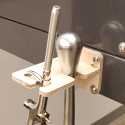
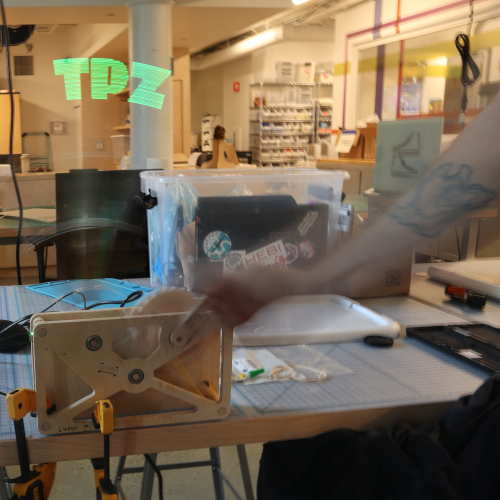
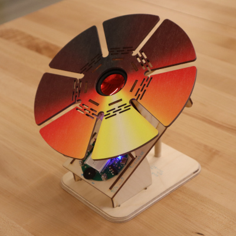

Maker-in-Residence Projects at The Possible Zone
march 20, 2023 -- may 26, 2023
During the spring of 2023, I visited The Possible Zone in Boston, MA and spent time as a Maker-in-Residence. I helped wake up and document machines in their wonderful new FabLab, assisted students with fabrication projects, and built a series of example projects which highlighted the capabilities of the space.about me

|
|
|  | |
|  |  |

This work is licensed under a Creative Commons Attribution-ShareAlike 4.0 International License.
© zach fredin, 2023